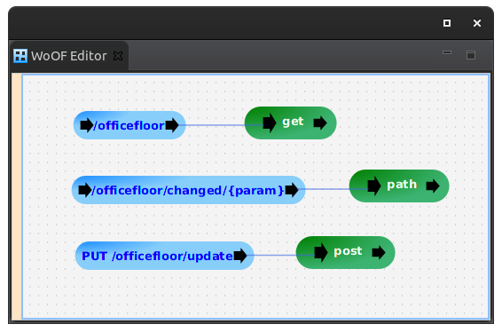

This tutorial demonstrates configuring a JAX-RS end point method as a procedure.
Adding a JAX-RS end point method as a procedure, allows re-use of existing code. Ideally, over time, the JAX-RS resources are simplified to methods taking advantage of OfficeFloor's IoCC. However, JAX-RS is supported as procedures to avoid significant rewrites of application code. This enables taking advantage of OfficeFloor's features with existing JAX-RS code.
Please see the JAX-RS Tutorial regarding configuring JAX-RS resources into WoOF. The tutorial needs to be followed to also enable JAX-RS end point methods to be configured as procedures.
Select the JAX-RS resource as a class when adding a procedure.
The tutorial configuration is as follows:
Note that the WoOF configured paths can be different to the JAX-RS end point mappings. The only constraint on this is that the path parameters must match.
The following tests demonstrates the procedures.
@RegisterExtension
public static final MockWoofServerExtension server = new MockWoofServerExtension();
@Test
public void get() {
MockWoofResponse response = server.send(MockWoofServer.mockRequest("/officefloor"));
response.assertResponse(200, "GET OfficeFloor Dependency");
}
@Test
public void pathParam() {
MockWoofResponse response = server.send(MockWoofServer.mockRequest("/officefloor/changed/parameter"));
response.assertJson(200, new ResponseModel("parameter"));
}
@Test
public void post() {
MockWoofResponse response = server
.send(MockWoofServer.mockJsonRequest(HttpMethod.PUT, "/officefloor/update", new RequestModel("INPUT")));
response.assertJson(200, new ResponseModel("INPUT"));
}
The next tutorial covers migrating JAX-RS for simpler code.